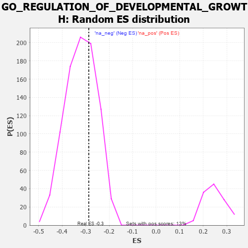

| | | Dataset | 7d |
| Phenotype | NoPhenotypeAvailable |
| Upregulated in class | na_neg |
| GeneSet | GO_REGULATION_OF_DEVELOPMENTAL_GROWTH |
| Enrichment Score (ES) | -0.28656855 |
| Normalized Enrichment Score (NES) | -0.8957594 |
| Nominal p-value | 0.680778 |
| FDR q-value | 0.95436853 |
| FWER p-Value | 1.0 |
Table: GSEA Results Summary
 Fig 1: Enrichment plot: GO_REGULATION_OF_DEVELOPMENTAL_GROWTH
Fig 1: Enrichment plot: GO_REGULATION_OF_DEVELOPMENTAL_GROWTH
Profile of the Running ES Score & Positions of GeneSet Members on the Rank Ordered List
| PROBE | GENE SYMBOL | GENE_TITLE | RANK IN GENE LIST | RANK METRIC SCORE | RUNNING ES | CORE ENRICHMENT | | 1 | SYT2 | | | 8 | 5.577 | 0.1114 | No |
| 2 | TBX20 | | | 267 | 0.880 | 0.0964 | No |
| 3 | ARX | | | 322 | 0.782 | 0.1053 | No |
| 4 | DLL1 | | | 337 | 0.760 | 0.1189 | No |
| 5 | GSK3A | | | 351 | 0.745 | 0.1322 | No |
| 6 | LRP1 | | | 470 | 0.648 | 0.1303 | No |
| 7 | MYOD1 | | | 504 | 0.628 | 0.1388 | No |
| 8 | HTRA2 | | | 527 | 0.621 | 0.1485 | No |
| 9 | SRF | | | 542 | 0.615 | 0.1591 | No |
| 10 | CCNB1 | | | 581 | 0.601 | 0.1664 | No |
| 11 | AKT1 | | | 1040 | 0.476 | 0.1179 | No |
| 12 | YAP1 | | | 1041 | 0.475 | 0.1275 | No |
| 13 | MEF2C | | | 1054 | 0.473 | 0.1355 | No |
| 14 | RAI1 | | | 1071 | 0.469 | 0.1429 | No |
| 15 | WDR36 | | | 1260 | 0.437 | 0.1279 | No |
| 16 | CARM1 | | | 1413 | 0.408 | 0.1168 | No |
| 17 | IFRD1 | | | 1486 | 0.392 | 0.1156 | No |
| 18 | RNF6 | | | 1605 | 0.373 | 0.1081 | No |
| 19 | CDK4 | | | 1626 | 0.370 | 0.1131 | No |
| 20 | MEIS1 | | | 1723 | 0.351 | 0.1079 | No |
| 21 | SGPL1 | | | 1820 | 0.334 | 0.1025 | No |
| 22 | ISLR2 | | | 2124 | 0.287 | 0.0699 | No |
| 23 | CREB1 | | | 2243 | 0.269 | 0.0603 | No |
| 24 | SIN3A | | | 2361 | 0.251 | 0.0505 | No |
| 25 | ATRN | | | 2640 | 0.207 | 0.0194 | No |
| 26 | DSCAM | | | 2689 | 0.200 | 0.0174 | No |
| 27 | MTM1 | | | 2893 | 0.168 | -0.0050 | No |
| 28 | FGFR2 | | | 2895 | 0.167 | -0.0017 | No |
| 29 | MAP2 | | | 3074 | 0.140 | -0.0215 | No |
| 30 | CTDP1 | | | 3279 | 0.109 | -0.0452 | No |
| 31 | PARP2 | | | 3316 | 0.103 | -0.0477 | No |
| 32 | SMAD7 | | | 3369 | 0.093 | -0.0524 | No |
| 33 | CDK5 | | | 3480 | 0.080 | -0.0647 | No |
| 34 | GLI1 | | | 3489 | 0.079 | -0.0641 | No |
| 35 | PIN1 | | | 3543 | 0.069 | -0.0695 | No |
| 36 | HSF1 | | | 3718 | 0.039 | -0.0908 | No |
| 37 | NIPBL | | | 3900 | 0.010 | -0.1135 | No |
| 38 | SFRP2 | | | 4065 | -0.018 | -0.1340 | No |
| 39 | CSF1 | | | 4074 | -0.019 | -0.1346 | No |
| 40 | WNT2 | | | 4084 | -0.021 | -0.1353 | No |
| 41 | MTOR | | | 4114 | -0.025 | -0.1385 | No |
| 42 | ABL1 | | | 4125 | -0.027 | -0.1392 | No |
| 43 | TBX2 | | | 4303 | -0.060 | -0.1604 | No |
| 44 | SYT17 | | | 4310 | -0.061 | -0.1600 | No |
| 45 | ADRB2 | | | 4352 | -0.068 | -0.1638 | No |
| 46 | ILK | | | 4510 | -0.096 | -0.1818 | No |
| 47 | SYT4 | | | 4590 | -0.116 | -0.1895 | No |
| 48 | RAB21 | | | 4620 | -0.122 | -0.1907 | No |
| 49 | FGFR3 | | | 4656 | -0.129 | -0.1925 | No |
| 50 | LIMK1 | | | 4684 | -0.136 | -0.1932 | No |
| 51 | PIM1 | | | 4776 | -0.152 | -0.2017 | No |
| 52 | RTN4 | | | 4783 | -0.154 | -0.1993 | No |
| 53 | PRKDC | | | 4955 | -0.189 | -0.2172 | No |
| 54 | DRD2 | | | 5088 | -0.221 | -0.2295 | No |
| 55 | SMO | | | 5195 | -0.247 | -0.2380 | No |
| 56 | TNKS2 | | | 5239 | -0.254 | -0.2383 | No |
| 57 | PTEN | | | 5262 | -0.261 | -0.2358 | No |
| 58 | CDK1 | | | 5264 | -0.262 | -0.2307 | No |
| 59 | RIMS2 | | | 5272 | -0.265 | -0.2262 | No |
| 60 | CPNE9 | | | 5374 | -0.289 | -0.2332 | No |
| 61 | LATS1 | | | 5412 | -0.298 | -0.2319 | No |
| 62 | IST1 | | | 5442 | -0.305 | -0.2294 | No |
| 63 | ACTN3 | | | 5486 | -0.315 | -0.2285 | No |
| 64 | FGFR1 | | | 5543 | -0.332 | -0.2289 | No |
| 65 | G6PD | | | 5638 | -0.358 | -0.2337 | No |
| 66 | BBS4 | | | 5806 | -0.407 | -0.2466 | No |
| 67 | TLL2 | | | 6020 | -0.478 | -0.2640 | No |
| 68 | DBNL | | | 6084 | -0.501 | -0.2619 | No |
| 69 | STK4 | | | 6145 | -0.518 | -0.2591 | No |
| 70 | INSR | | | 6204 | -0.538 | -0.2556 | No |
| 71 | BBS2 | | | 6383 | -0.608 | -0.2659 | No |
| 72 | CDKL3 | | | 6401 | -0.618 | -0.2556 | No |
| 73 | PTPRS | | | 6646 | -0.738 | -0.2717 | Yes |
| 74 | PAK1 | | | 6691 | -0.757 | -0.2620 | Yes |
| 75 | GSK3B | | | 6719 | -0.768 | -0.2500 | Yes |
| 76 | NPY1R | | | 6732 | -0.776 | -0.2358 | Yes |
| 77 | GHSR | | | 6937 | -0.894 | -0.2437 | Yes |
| 78 | CPNE5 | | | 7070 | -0.977 | -0.2407 | Yes |
| 79 | RYK | | | 7102 | -1.000 | -0.2245 | Yes |
| 80 | SYT1 | | | 7148 | -1.033 | -0.2094 | Yes |
| 81 | AR | | | 7169 | -1.046 | -0.1909 | Yes |
| 82 | PLAC8 | | | 7355 | -1.223 | -0.1897 | Yes |
| 83 | PPIB | | | 7499 | -1.396 | -0.1797 | Yes |
| 84 | DCC | | | 7550 | -1.470 | -0.1564 | Yes |
| 85 | PLS1 | | | 7734 | -1.855 | -0.1422 | Yes |
| 86 | CAV3 | | | 7896 | -2.739 | -0.1074 | Yes |
| 87 | PLCB1 | | | 7904 | -2.841 | -0.0510 | Yes |
| 88 | PI16 | | | 7914 | -2.948 | 0.0072 | Yes |
Table: GSEA details [plain text format]

Fig 2: GO_REGULATION_OF_DEVELOPMENTAL_GROWTH: Random ES distribution
Gene set null distribution of ES for GO_REGULATION_OF_DEVELOPMENTAL_GROWTH